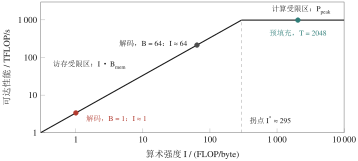
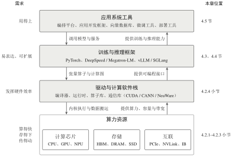

4.1 大模型对计算系统提出的要求
动手选硬件、写代码之前，先要算清楚一笔账：大模型到底要计算多少、存储多少、搬运多少？本节用参数量 \(N\)、每个 token 的计算量和每次计算的数据搬运量做数量级估算，再借助 Roofline 模型判断瓶颈落在哪里。结论是：大模型同时受到算力、存储容量、存储带宽和设备互联四方面约束，计算系统的四层结构正是由此而来。
4.1.1 两个典型场景
先看两个场景。
场景一：训练。某团队希望用 \(2\times10^{12}\) 个 token 的语料，从头训练一个 70 亿参数（7B）的模型。他们需要知道：单张显卡的显存能否容纳模型？训练需要多长时间？需要多少张显卡？
场景二：推理。训练好的模型部署为在线问答服务，同时有上百名用户提问。服务方关心的是：用户需要等待多久才能看到第一个输出 token？每秒能输出多少个 token？一台服务器能同时服务多少用户？
这两个问题看似不同，背后却涉及同样的三个基本量：存储量（模型与中间状态占多少字节）、计算量（需要多少次浮点运算）和数据搬运量（运算时要在存储与计算单元之间移动多少字节）。下面逐一估算。
4.1.2 三个基本量的估算
存储量 设模型有 \(N\) 个参数，每个参数用 \(b\) 位表示，则仅权重就至少占用 \[M_{\mathrm{weight}} = \frac{N\,b}{8}\ \text{字节}. \tag{4-1}\] 7B 模型若以 16 位浮点数（FP16 或 BF16）存储，需要 \(7\times10^{9}\times 2 = 14\times10^{9}\) 字节，约 14 GB；若量化为 4 位，仅权重约 3.5 GB。训练时还要额外保存梯度和优化器状态，所需存储往往是权重本身的数倍（详见第 4.3.3 小节）。
计算量 对于 Transformer 结构的模型，处理一个 token 的前向计算约需 \(2N\) 次浮点运算（每个参数参与一次乘法和一次加法）；训练时还要做反向传播，计算量约为前向的两倍，因此每个训练 token 合计约 \(6N\) 次浮点运算[5]。于是训练总计算量可估算为 \[C_{\mathrm{train}} \approx 6\,N\,D, \tag{4-2}\] 其中 \(D\) 为训练 token 总数。
例 4-1 训练需要多少张卡
按场景一，\(C_{\mathrm{train}}\approx 6\times7\times10^{9}\times2\times10^{12}=8.4\times10^{22}\) 次浮点运算。一张数据中心级 GPU 的 BF16 稠密峰值算力约为 \(10^{15}\) FLOP/s 量级（例如 NVIDIA H100 SXM 约 \(9.9\times10^{14}\) FLOP/s[7]）。实际训练中能达到峰值的 40% 左右已属较高水平，即有效算力约 \(4\times10^{14}\) FLOP/s，则 \[t_{\text{单卡}} \approx \frac{8.4\times10^{22}}{4\times10^{14}} \approx 2.1\times10^{8}\ \text{s} \approx 6.7\ \text{年}.\] 若使用 1024 张 GPU 并行训练，且并行效率理想，耗时可缩短到约 2.4 天。这说明：大模型训练通常需要多卡乃至多机的分布式计算，设备之间如何交换数据因此成为核心问题。
数据搬运量 计算单元只能处理已经送达的数据。推理时每生成一个新 token，都要把全部权重从显存读入计算单元一次：对于 14 GB 权重的 7B 模型，就意味着每个 token 至少读取 14 GB 数据。若显存带宽为 3.35 TB/s，则单个请求逐 token 生成的速度上限约为 \[\frac{3.35\times10^{12}\ \text{B/s}}{14\times10^{9}\ \text{B/token}} \approx 240\ \text{token/s}.\] 该上限主要不由芯片峰值算力决定，而由存储带宽决定。可见，衡量计算系统时不能只看算力，还必须同时考察数据供给是否及时。
4.1.3 瓶颈判断工具：算术强度与 Roofline 模型
为判断一项计算究竟受算力限制还是受访存限制，引入算术强度（arithmetic intensity）：记一次计算的浮点运算次数为 \(F\)，需要在存储与计算单元之间搬运的字节数为 \(Q\)，则 \[I = \frac{F}{Q}\quad(\text{FLOP/byte}). \tag{4-3}\] 设硬件峰值算力为 \(P_{\mathrm{peak}}\)，存储带宽为 \(B_{\mathrm{mem}}\)。计算单元每秒最多完成 \(P_{\mathrm{peak}}\) 次运算，而存储系统每秒最多供给 \(B_{\mathrm{mem}}\) 字节数据、支撑 \(I\cdot B_{\mathrm{mem}}\) 次运算，二者取较小者，即得 Roofline 模型[6]给出的可达性能上界： \[P_{\mathrm{attainable}} \le \min\bigl(P_{\mathrm{peak}},\; I\cdot B_{\mathrm{mem}}\bigr). \tag{4-4}\] 两条直线相交处的算术强度 \(I^{*}=P_{\mathrm{peak}}/B_{\mathrm{mem}}\) 称为拐点。\(I<I^{*}\) 时性能受带宽限制，称为访存受限（memory-bound）；\(I>I^{*}\) 时性能受峰值算力限制，称为计算受限（compute-bound）。以前述 GPU 为例，\(I^{*}\approx 9.9\times10^{14}/3.35\times10^{12}\approx 295\) FLOP/byte。

图 4-1 Roofline 模型示意。以峰值算力约 989 TFLOP/s、显存带宽约 3.35 TB/s 的 GPU 为例；坐标为对数刻度，各点为数量级估计
将 Roofline 模型用于推理的两个阶段（图 4-1），可以得到一个重要结论。读入一次 16 位权重（2 字节）后，若只为一个 token 做 2 次运算，算术强度约为 \(1\) FLOP/byte，远低于拐点；若一次读入后同时为 \(T\) 个 token 复用，算术强度约为 \(T\)。因此：
预填充（一次性处理用户输入的全部 token，\(T\) 可达数千）的算术强度高，通常计算受限；
逐 token 解码（每步只生成一个 token）的算术强度很低，通常访存受限；把多个请求合并成批次（批大小为 \(B\)）可使算术强度提高到约 \(B\)。
这就解释了一个常见现象：同一张显卡处理长输入（预填充阶段）时吞吐较高，而逐 token 解码时吞吐却较低——原因不是算力不足，而是每生成一个 token 都要重新读取大量权重和缓存。第 4.4 节介绍的许多推理优化技术，正是围绕这一点展开的。
辨析
Roofline 模型给出的是性能上界，不能用来精确预测实际性能。它的价值在于快速判断主要瓶颈：对访存受限的任务，提升峰值算力作用有限；对计算受限的任务，提升带宽同样作用有限。
4.1.4 从需求到方案：计算系统的四层结构
综合以上估算，大模型对计算系统的需求可以归纳为四条：
算得快——提供足够的浮点算力，并让算力被充分利用；
存得下、送得及——有足够的存储容量容纳权重和中间状态，并有足够的带宽及时供给数据；
传得动——当一张卡不够用时，多张卡、多台机器之间能高效交换数据；
用得上——开发者能方便地表达模型、训练模型，用户能方便地调用模型。
没有哪一个部件能单独满足这四条需求，于是形成了层次化的解决方案（图 4-2）：底层的算力资源（芯片、存储、互联）提供物理能力；驱动与计算软件栈把硬件能力开放为可编程接口；训练与推理框架让开发者用张量运算表达模型，并自动完成求导、并行与调度；最上层的应用系统工具把模型组装成可部署、可管理的产品。每一层都向上层隐藏下层的复杂性，同时受到下层能力的约束。

图 4-2 大模型计算系统的四层结构。左侧为各层满足的需求，右侧为对应的章节；向下的箭头表示上层向下层提交的工作，向上的箭头表示下层向上层提供的能力
表 4-1 给出了本章各节与这四层结构的对应关系。阅读时可以随时回到图 4-2，确认当前内容处在哪一层、解决的是哪一类需求。